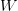

内容列表：
- 线性分类器简介
- 线性评分函数
- 阐明线性分类器
- 损失函数
- 多类SVM 译者注：中篇翻译截止处
- Softmax分类器
- SVM和Softmax的比较
- 基于Web的可交互线性分类器原型
- 小结
损失函数 Loss function
在上一节定义了从图像像素值到所属类别的评分函数（score function），该函数的参数是权重矩阵。在函数中，数据 是给定的，不能修改。但是我们可以调整权重矩阵这个参数，使得评分函数的结果与训练数据集中图像的真实类别一致，即评分函数在正确的分类的位置应当得到最高的评分（score）。
是给定的，不能修改。但是我们可以调整权重矩阵这个参数，使得评分函数的结果与训练数据集中图像的真实类别一致，即评分函数在正确的分类的位置应当得到最高的评分（score）。
回到之前那张猫的图像分类例子，它有针对“猫”，“狗”，“船”三个类别的分数。我们看到例子中权重值非常差，因为猫分类的得分非常低（-96.8），而狗（437.9）和船（61.95）比较高。我们将使用损失函数（Loss Function）（有时也叫代价函数Cost Function或目标函数Objective）来衡量我们对结果的不满意程度。直观地讲，当评分函数输出结果与真实结果之间差异越大，损失函数输出越大，反之越小。
多类支持向量机损失 Multiclass Support Vector Machine Loss
损失函数的具体形式多种多样。首先，介绍常用的多类支持向量机（SVM）损失函数。SVM的损失函数想要SVM在正确分类上的得分始终比不正确分类上的得分高出一个边界值 。我们可以把损失函数想象成一个人，这位SVM先生（或者女士）对于结果有自己的品位，如果某个结果能使得损失值更低，那么SVM就更加喜欢它。
。我们可以把损失函数想象成一个人，这位SVM先生（或者女士）对于结果有自己的品位，如果某个结果能使得损失值更低，那么SVM就更加喜欢它。
让我们更精确一些。回忆一下，第i个数据中包含图像 的像素和代表正确类别的标签
的像素和代表正确类别的标签 。评分函数输入像素数据，然后通过公式
。评分函数输入像素数据，然后通过公式 来计算不同分类类别的分值。这里我们将分值简写为
来计算不同分类类别的分值。这里我们将分值简写为 。比如，针对第j个类别的得分就是第j个元素：
。比如，针对第j个类别的得分就是第j个元素： 。针对第i个数据的多类SVM的损失函数定义如下：
。针对第i个数据的多类SVM的损失函数定义如下：
可以看到第一个部分结果是0，这是因为[-7-13+10]得到的是负数，经过 函数处理后得到0。这一对类别分数和标签的损失值是0，这是因为正确分类的得分13与错误分类的得分-7的差为20，高于边界值10。而SVM只关心差距至少要大于10，更大的差值还是算作损失值为0。第二个部分计算[11-13+10]得到8。虽然正确分类的得分比不正确分类的得分要高（13>11），但是比10的边界值还是小了，分差只有2，这就是为什么损失值等于8。简而言之，SVM的损失函数想要正确分类类别
函数处理后得到0。这一对类别分数和标签的损失值是0，这是因为正确分类的得分13与错误分类的得分-7的差为20，高于边界值10。而SVM只关心差距至少要大于10，更大的差值还是算作损失值为0。第二个部分计算[11-13+10]得到8。虽然正确分类的得分比不正确分类的得分要高（13>11），但是比10的边界值还是小了，分差只有2，这就是为什么损失值等于8。简而言之，SVM的损失函数想要正确分类类别 的分数比不正确类别分数高，而且至少要高
的分数比不正确类别分数高，而且至少要高 。如果不满足这点，就开始计算损失值。
。如果不满足这点，就开始计算损失值。
那么在这次的模型中，我们面对的是线性评分函数（ ），所以我们可以将损失函数的公式稍微改写一下：
），所以我们可以将损失函数的公式稍微改写一下：
其中 是权重
是权重 的第j行，被变形为列向量。然而，一旦开始考虑更复杂的评分函数
的第j行，被变形为列向量。然而，一旦开始考虑更复杂的评分函数 公式，这样做就不是必须的了。
公式，这样做就不是必须的了。
在结束这一小节前，还必须提一下的属于是关于0的阀值： 函数，它常被称为折叶损失（hinge loss）。有时候会听到人们使用平方折叶损失SVM（即L2-SVM），它使用的是
函数，它常被称为折叶损失（hinge loss）。有时候会听到人们使用平方折叶损失SVM（即L2-SVM），它使用的是 ，将更强烈（平方地而不是线性地）地惩罚过界的边界值。不使用平方是更标准的版本，但是在某些数据集中，平方折叶损失会工作得更好。可以通过交叉验证来决定到底使用哪个。
，将更强烈（平方地而不是线性地）地惩罚过界的边界值。不使用平方是更标准的版本，但是在某些数据集中，平方折叶损失会工作得更好。可以通过交叉验证来决定到底使用哪个。
我们对于预测训练集数据分类标签的情况总有一些不满意的，而损失函数就能将这些不满意的程度量化。
—————————————————————————————————————————
—————————————————————————————————————————
正则化（Regularization）：上面损失函数有一个问题。假设有一个数据集和一个权重集W能够正确地分类每个数据（即所有的边界都满足，对于所有的i都有 ）。问题在于这个W并不唯一：可能有很多相似的W都能正确地分类所有的数据。一个简单的例子：如果W能够正确分类所有数据，即对于每个数据，损失值都是0。那么当
）。问题在于这个W并不唯一：可能有很多相似的W都能正确地分类所有的数据。一个简单的例子：如果W能够正确分类所有数据，即对于每个数据，损失值都是0。那么当 时，任何数乘
时，任何数乘 都能使得损失值为0，因为这个变化将所有分值的大小都均等地扩大了，所以它们之间的绝对差值也扩大了。举个例子，如果一个正确分类的分值和举例它最近的错误分类的分值的差距是15，对W乘以2将使得差距变成30。
都能使得损失值为0，因为这个变化将所有分值的大小都均等地扩大了，所以它们之间的绝对差值也扩大了。举个例子，如果一个正确分类的分值和举例它最近的错误分类的分值的差距是15，对W乘以2将使得差距变成30。
换句话说，我们希望能向某些特定的权重W添加一些偏好，对其他权重则不添加，以此来消除模糊性。这一点是能够实现的，方法是向损失函数增加一个正则化惩罚（regularization penalty） 部分。最常用的正则化惩罚是L2范式，L2范式通过对所有参数进行逐元素的平方惩罚来抑制大数值的权重：
部分。最常用的正则化惩罚是L2范式，L2范式通过对所有参数进行逐元素的平方惩罚来抑制大数值的权重：

将其展开完整公式是：
其中， 是训练集的数据量。现在正则化惩罚添加到了损失函数里面，并用超参数
是训练集的数据量。现在正则化惩罚添加到了损失函数里面，并用超参数 来计算其权重。该超参数无法简单确定，需要通过交叉验证来获取。
来计算其权重。该超参数无法简单确定，需要通过交叉验证来获取。
除了上述理由外，引入正则化惩罚还带来很多良好的性质，这些性质大多会在后续章节介绍。比如引入了L2惩罚后，SVM们就有了最大边界（max margin）这一良好性质。（如果感兴趣，可以查看CS229课程）。
其中最好的性质就是对大数值权重进行惩罚，可以提升其泛化能力，因为这就意味着没有哪个维度能够独自对于整体分值有过大的影响。举个例子，假设输入向量 ，两个权重向量
，两个权重向量 ，
， 。那么
。那么 ，两个权重向量都得到同样的内积，但是
，两个权重向量都得到同样的内积，但是 的L2惩罚是1.0，而
的L2惩罚是1.0，而 的L2惩罚是0.25。因此，根据L2惩罚来看，
的L2惩罚是0.25。因此，根据L2惩罚来看， 更好，因为它的正则化损失更小。从直观上来看，这是因为
更好，因为它的正则化损失更小。从直观上来看，这是因为 的权重值更小且更分散。既然L2惩罚倾向于更小更分散的权重向量，这就会鼓励分类器最终将所有维度上的特征都用起来，而不是强烈依赖其中少数几个维度。在后面的课程中可以看到，这一效果将会提升分类器的泛化能力，并避免过拟合。
的权重值更小且更分散。既然L2惩罚倾向于更小更分散的权重向量，这就会鼓励分类器最终将所有维度上的特征都用起来，而不是强烈依赖其中少数几个维度。在后面的课程中可以看到，这一效果将会提升分类器的泛化能力，并避免过拟合。
需要注意的是，和权重不同，偏差没有这样的效果，因为它们并不控制输入维度上的影响强度。因此通常只对权重 正则化，而不正则化偏差
正则化，而不正则化偏差 。在实际操作中，可发现这一操作的影响可忽略不计。最后，因为正则化惩罚的存在，不可能在所有的例子中得到0的损失值，这是因为只有当
。在实际操作中，可发现这一操作的影响可忽略不计。最后，因为正则化惩罚的存在，不可能在所有的例子中得到0的损失值，这是因为只有当 的特殊情况下，才能得到损失值为0。
的特殊情况下，才能得到损失值为0。
代码：下面是一个无正则化部分的损失函数的Python实现，有非向量化和半向量化两个形式：
def L_i(x, y, W):"""unvectorized version. Compute the multiclass svm loss for a single example (x,y)- x is a column vector representing an image (e.g. 3073 x 1 in CIFAR-10)with an appended bias dimension in the 3073-rd position (i.e. bias trick)- y is an integer giving index of correct class (e.g. between 0 and 9 in CIFAR-10)- W is the weight matrix (e.g. 10 x 3073 in CIFAR-10)"""delta = 1.0 # see notes about delta later in this sectionscores = W.dot(x) # scores becomes of size 10 x 1, the scores for each classcorrect_class_score = scores[y]D = W.shape[0] # number of classes, e.g. 10loss_i = 0.0for j in xrange(D): # iterate over all wrong classesif j == y:# skip for the true class to only loop over incorrect classescontinue# accumulate loss for the i-th exampleloss_i += max(0, scores[j] - correct_class_score + delta)return loss_idef L_i_vectorized(x, y, W):"""A faster half-vectorized implementation. half-vectorizedrefers to the fact that for a single example the implementation containsno for loops, but there is still one loop over the examples (outside this function)"""delta = 1.0scores = W.dot(x)# compute the margins for all classes in one vector operationmargins = np.maximum(0, scores - scores[y] + delta)# on y-th position scores[y] - scores[y] canceled and gave delta. We want# to ignore the y-th position and only consider margin on max wrong classmargins[y] = 0loss_i = np.sum(margins)return loss_idef L(X, y, W):"""fully-vectorized implementation :- X holds all the training examples as columns (e.g. 3073 x 50,000 in CIFAR-10)- y is array of integers specifying correct class (e.g. 50,000-D array)- W are weights (e.g. 10 x 3073)"""# evaluate loss over all examples in X without using any for loops# left as exercise to reader in the assignment接下来要做的，就是找到能够使损失值最小化的权重了。
实际考虑
设置Delta：你可能注意到上面的内容对超参数 及其设置是一笔带过，那么它应该被设置成什么值？需要通过交叉验证来求得吗？现在看来，该超参数在绝大多数情况下设为
及其设置是一笔带过，那么它应该被设置成什么值？需要通过交叉验证来求得吗？现在看来，该超参数在绝大多数情况下设为 都是安全的。超参数
都是安全的。超参数 和
和 看起来是两个不同的超参数，但实际上他们一起控制同一个权衡：即损失函数中的数据损失和正则化损失之间的权衡。理解这一点的关键是要知道，权重
看起来是两个不同的超参数，但实际上他们一起控制同一个权衡：即损失函数中的数据损失和正则化损失之间的权衡。理解这一点的关键是要知道，权重 的大小对于分类分值有直接影响（当然对他们的差异也有直接影响）：当我们将
的大小对于分类分值有直接影响（当然对他们的差异也有直接影响）：当我们将 中值缩小，分类分值之间的差异也变小，反之亦然。因此，不同分类分值之间的边界的具体值（比如
中值缩小，分类分值之间的差异也变小，反之亦然。因此，不同分类分值之间的边界的具体值（比如 或
或 ）从某些角度来看是没意义的，因为权重自己就可以控制差异变大和缩小。也就是说，真正的权衡是我们允许权重能够变大到何种程度（通过正则化强度
）从某些角度来看是没意义的，因为权重自己就可以控制差异变大和缩小。也就是说，真正的权衡是我们允许权重能够变大到何种程度（通过正则化强度 来控制）。
来控制）。
与二元支持向量机（Binary Support Vector Machine）的关系：在学习本课程前，你可能对于二元支持向量机有些经验，它对于第i个数据的损失计算公式是：
其中， 是一个超参数，并且
是一个超参数，并且 。可以认为本章节介绍的SVM公式包含了上述公式，上述公式是多类支持向量机公式只有两个分类类别的特例。也就是说，如果我们要分类的类别只有两个，那么公式就化为二元SVM公式。这个公式中的
。可以认为本章节介绍的SVM公式包含了上述公式，上述公式是多类支持向量机公式只有两个分类类别的特例。也就是说，如果我们要分类的类别只有两个，那么公式就化为二元SVM公式。这个公式中的 和多类SVM公式中的
和多类SVM公式中的 都控制着同样的权衡，而且它们之间的关系是
都控制着同样的权衡，而且它们之间的关系是
备注：在初始形式中进行最优化。如果在本课程之前学习过SVM，那么对kernels，duals，SMO算法等将有所耳闻。在本课程（主要是神经网络相关）中，损失函数的最优化的始终在非限制初始形式下进行。很多这些损失函数从技术上来说是不可微的（比如当 时，
时， 函数就不可微分），但是在实际操作中并不存在问题，因为通常可以使用次梯度。
函数就不可微分），但是在实际操作中并不存在问题，因为通常可以使用次梯度。
备注：其他多类SVM公式。需要指出的是，本课中展示的多类SVM只是多种SVM公式中的一种。另一种常用的公式是One-Vs-All（OVA）SVM，它针对每个类和其他类训练一个独立的二元分类器。还有另一种更少用的叫做All-Vs-All（AVA）策略。我们的公式是按照Weston and Watkins 1999 (pdf)版本，比OVA性能更强（在构建有一个多类数据集的情况下，这个版本可以在损失值上取到0，而OVA就不行。感兴趣的话在论文中查阅细节）。最后一个需要知道的公式是Structured SVM，它将正确分类的分类分值和非正确分类中的最高分值的边界最大化。理解这些公式的差异超出了本课程的范围。本课程笔记介绍的版本可以在实践中安全使用，而被论证为最简单的OVA策略在实践中看起来也能工作的同样出色（在 Rikin等人2004年的论文In Defense of One-Vs-All Classification (pdf)中可查）。